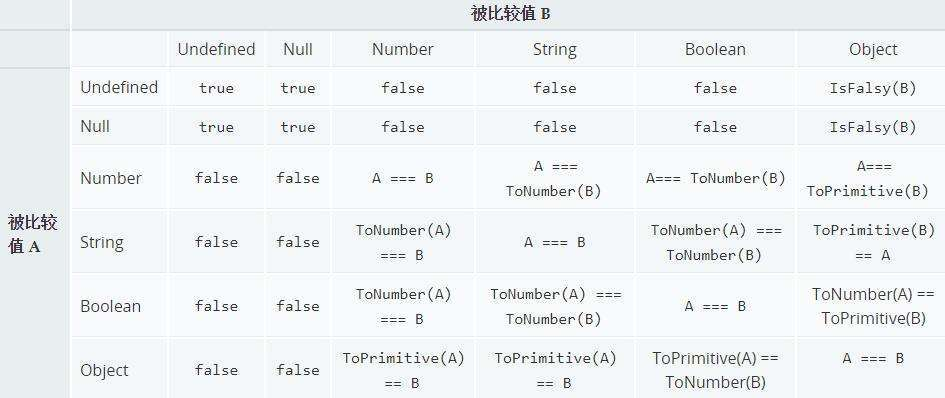

JavaScript == 比较规则
最近看到一道题
![] == [] |
运行一下，可以看到答案为 true。归根结底这些都是 JavaScript 中的类型转换造成的奇怪的结果。关于 JavaScript 中 == 的计较规则，我再在网上我找到了一张图，看看看一下比较时的规则：

根据上面的图表，我们再来看下开始的题目，来看看结果是怎么来的。
- 首先
[]转换为true, 取反变为false。则题目变成如下：
false == [] |
- 变成了 Boolean 与 Object 的比较，根据规则，继续进行类型转换，ToNumber(Boolean) == ToPrimitive(Object)。那么题目变成：
// false 转成 number 变为 0，[] 转为原始值，就是 '' |
- 变成了 Number 与 String 的比较，根据规则，继续进行类型转换，Number == ToNumber(String)。那么题目变成：
// '' 转成 number 就是 0 |
- 所以结果就为 true 了。
关于这类问题，还涉及到类型转换的问题，接下来详细了解一下问题。
ToNumber
首先看一下其他数据类型是如何 转 Number 的：
| 原始值 | 转换结果 |
|---|---|
| undefined | NaN |
| null | 0 |
| true | 1 |
| false | 0 |
| String | 根据语法转换规则进行转化 |
| Symbol | Throw a TypeError exception |
| Object | 先调用 toPrimitive，再调用 toNumber |
StringToNumber
具体看一下 String 是如何 转 Number 的：
- 如果字符串中只包含数字，那么就转换为对应的数字
- 如果字符串中只包含十六进制格式，那么就转换为对应的十进制数字。
- 如果字符串为空，那么转换为 0。
- 如果字符串包含上述之外的字符，那么转换为 NaN。
ToBoolean
再看一下其它数据类型是如何 转 Boolean 的：
| 原始值 | 转换结果 |
|---|---|
| undefined | false |
| null | false |
| Number | 0 和 NaN 返回 false，其他值返回 true |
| String | ‘’ 返回 false，其他值返回 true |
| Symbol | true |
| Object | true |
ToString
再看一下其它数据类型是如何转 String 的：
| 原始值 | 转换结果 |
|---|---|
| undefined | ‘undefined’ |
| null | ‘null’ |
| Boolean | ‘true’ 或者 ‘false’ |
| Number | 对应的字符串 |
| Symbol | Throw a TypeError exception |
| Object | 先调用 toPrimitive，再调用 toPrimitive |
ToPrimitive
在对象转原始类型时，一般会调用内置的 ToPrimitive 方法。具体的详细规则，参照 ECMA 规范，在这里用一份代码表示一下 ToPrimitive 是如何转换为原始类型的：
const getType = (obj) => { |
关于规范中中通过 hint 的值来确定 toString 和 valueOf 的调用顺序，之前还是存在疑问的。因为据我之前了解在对象 toString 和 valueOf 都存在的情况下，JavaScript 是盲目的选择 valueOf 方法来进行类型转换的。其实是如规范中所说，hint 值默认为 default 时，被转换成了 number, 所以会发现 JavaScript 盲目的选择 valueOf 方法来进行类型转换。但当我们使用模板字符串进行转换时，hint 值就为 string 了。可以看一下下面的例子：
const obj = { |
Symbol.toPrimitive
Symbol.toPrimitive 是一个内置的 Symbol 值，它是作为对象的函数值属性存在的，当一个对象转换为对应的原始值时，会调用此函数。
const obj = { |
此外，该方法在类型转换的时候优先级最高，就如上面规范所说，Symbol.toPrimitive 相当于内置的 @@toPrimitive 方法。具体可以看一下：
const obj = { |